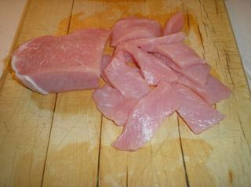
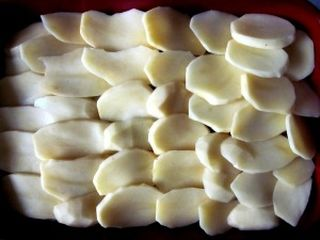
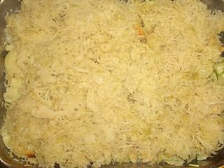

Шаг 1: нарезаем мясо и овощи.

Берем свинину и нарезаем маленькими тонкими кусочками размером примерно по 2 см. Очищаем луковицу и режем небольшими полукольцами. Картофель чистим, нарезаем тонкими кружочками.
Шаг 2: укладываем ингредиенты.

Берем емкость, которую можно поставить в духовку, желательно высокую сковороду. Смазываем её дно и края растительным маслом. Укладываем мясо на дно, солим, добавляем специи. Сверху кладем лук. Далее картофель раскладываем так чтобы, закрыть всю поверхность. На картофель наносим майонез. Твердый сыр натираем на терке, и рассыпаем его на картофель.
Шаг 3: запекаем.

Ставим емкость в разогретую до 180 градусов духовку и запекаем в течении 40-60 минут. Проверить готовность можно проткнув вилкой картофель в середине — он должен быть мягким. Запекшийся сыр покрывается тонкой хрустящей корочкой.